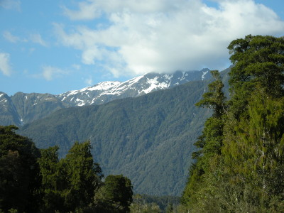
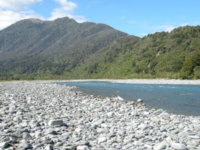
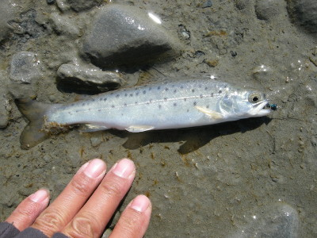
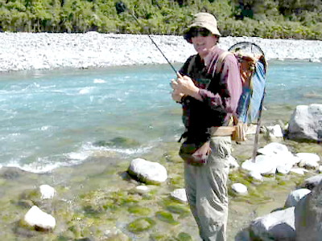

釣行日誌 ＮＺ編 「翡翠、黄金、そして銀塊」
山岳渓流へ
2010/12/04(SAT)-1
パチッと目が覚めて、食堂に行くと、すでに熱い紅茶が用意されており、食パンを焼いて朝食となった。本日の闘いに備えてしっかりと食べてから、ブリントさんがテーブルに地図を出してきて作戦会議を開く。今日は彼がかねてから狙いを付けていたという山岳渓流を釣ってみることに決め、二人で商売道具を積み込み、ホキティカを後にした。
フラットな牧草地の中を走る農道が狭くなり、遠くに見えていた峰々が大きく両側から張り出すようになって来て、農道は林道のような雰囲気になった。ゲートが見えてきて、今日はここから歩くとのこと。空き地に車を停め、釣り支度を整える。正面の高い峰の連なりには、白雪が輝いている。

今日のブリントさんは、チェックの長袖シャツに長ズボン、ウェーディングブーツ、いつもの大型バックパックというスタイルである。僕もショーツにタイツ、ネオプレンソックスにウェーディングシューズである。天気は上々。サイトフィッシング日和だ。閉ざされたゲートをよいしょと乗り越え、林道を歩き始める。右手奥には茫漠とした大河の河原が広がっている。この辺りは中流域と上流域との遷移点らしい。1997年に初めてブリントさんと釣りをした、平原の中の川をなんとなく思い出させる光景であった。いよいよこれから僕たちの大聖堂へと歩み込んで行くのだ。
30分ほど歩いてから林道を外れて右手に進み、広大な河原に出た。大きな礫がゴロゴロと一面に広がっており、少々歩きにくかったが障害物は無いのでキャストもファイトもやりやすそうである。水の色はわずかに青く、翡翠色が付いている。源流域には氷河があるのだろう。

時刻は９時20分。胸をドキドキさせながらロッドを継ないでリールをセットする。この天気ならドライで行こうと、大型のレッドハンピーを結び、岸辺に立つ。渓相はやや単調で、長～い瀬が延々と続いている。全部のポイントをブラインドで釣っていたらすぐに日が暮れるので、見込みの薄そうなポイントは目視でスキャンして鱒の姿を探し、居なければ静かに上流へ歩いて遡行し、怪しい雰囲気のポイントだけ竿を出してゆくことにした。
小一時間ほど釣り上がったが、魚影は見あたらない。しかし、次第に淵と瀬が交互に現れるようになり、けっこう水深のある淵の尻にたどり着いた。ブリントさんが、念のためにニンフをドロッパーに結べ、とアドバイスしてくれたので、ディーン君にもらった秘蔵のニンフをハンピーの下に結んだ。長い淵の流れ出しから慎重に攻め、岸沿い・流心・その中間の３本の筋を流してから上流へ５歩移動、再びキャスト。という一連の動作でブラインドの釣りを進める。
淵の中央辺りまで進んだ所で、流れてきたハンピーがピクンと沈む。おっ！と思って合わせると、６番ロッドをプルプルと震わせて、可愛い魚体が上がってきた。銀白色に輝いているが、ブラウンの幼魚である。ニンフのフックがしっかりと上顎に刺さっている。

海まではだいぶ距離があるので、降海型ではなく居付きのブラウンだと思われるが、水の色が青白いので、保護色でこんな体色になっているのだろう。ニュージーランドでは主にサイトフィッシングで釣るので、これまでは大きな魚しか居ないように思い込んでいたのだが、こんなサイズも居ることがわかって何か安心した気分になった。
遡行するにつれ、徐々に川幅が狭くなり、こちら岸にガレージのような巨岩が鎮座している荒瀬にやって来た。巨岩の下に出来たわずかなポケットを探っていたブリントさんのロッドがふいに大きく曲がった。
『おっ！ ブリントさんやったか！？』
デジカメを動画に切り替えている間に鱒は下流へ疾走し、彼が追いかけて走り出したところでバレてしまった。
「思った通りのポイントで出たんだけどなぁ....けっこう大きかったぞ」

そう言いながらブリントさんは引き出されたラインを巻き取っていた。ううむ、やはり大物が居るんだ、と、心を掻き立てられ、さらにぐんぐんと歩いて次のポイントへと歩みを進める。
釣行日誌ＮＺ編 目次へ
サイトマップ
ホームへ
お問い合わせ